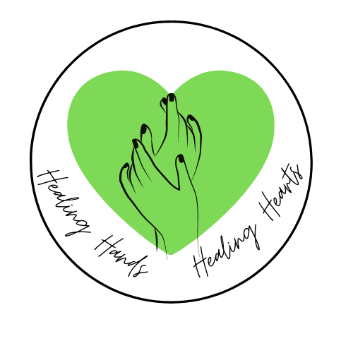

Healing Hands Healing Hearts

imagine a large image
Is Home Health Care Right For Me?
Home health care covers a wide variety of services: from personal caregivers to physical therapy, switching to home health care may provide a tremendous amount of relief for you or your loved one. Home health care can provide individuals with much-needed assistance and lead them on the path to independence. Take this quiz to learn more about whether or not home health care is right for you. If you decide to take the path of home health care, with treatment plans & care plans specifically tailored to your needs, you can be assured that Healing Hands Healing Hearts will give you the relief you deserve.
"Hey, this is a quote." ~ Messiah Smiley
Why Healing Hands Healing Hearts?
At Healing Hands Healing Hearts we believe in community, compassion, and communication. We are more than just a home health care business, we are a family. We love our patients and rest assured, all in our family are well taken care of; our strict hiring process guarantees not only that our patients will be taken care of by the most qualified clinicians, but that they will be taken care of by someone who cares. Choosing Healing Hands Healing Hearts is choosing health. Choose to take our hand and let us heal you. LEARN MORE BUTTON
imagine a large image
"Hey, this is a quote." ~ Messiah Smiley
imagine a large image
Testimonials
Make this a slideshow thing
"Hey, this is a quote." ~ Messiah Smiley
Where Do We Serve?
Service ares - buzzwords - link to services
imagine a map